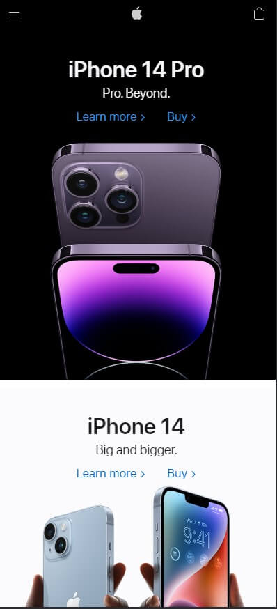

Contrast
Apple
In the above, we see that Apple uses contrast very well. There are different backgrounds for the pictures. There is a black background in the first picture with white lettering and then a white background in the second with black lettering.
Hick's Law
Amazon

Amazon's 1-click buy is a great example of Hick's law. Reducing the number of perceived options on screen makes the interface more user friendly. It is also more likely that the user will accomplish the goal and not give up or get confused. It is important to point out not to oversimplify! The way the products are displayed and the navigation provided with them rightly takes you to the next step of purchase.
Rule of Thirds
Byu-Idaho
The rule of thirds is a method of breaking up an image or design into different sections using columns and rows that form a grid. And BYU IDAHO website shows this well.